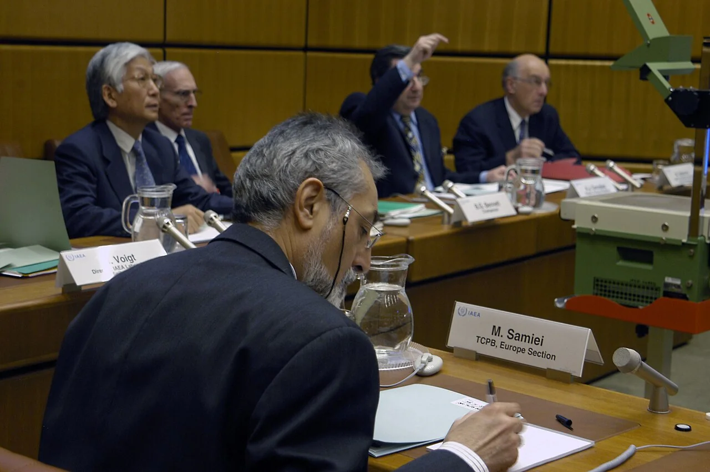
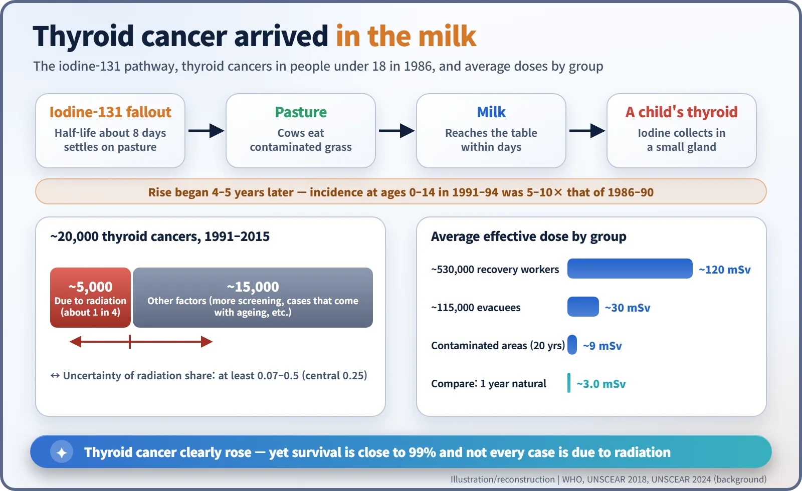
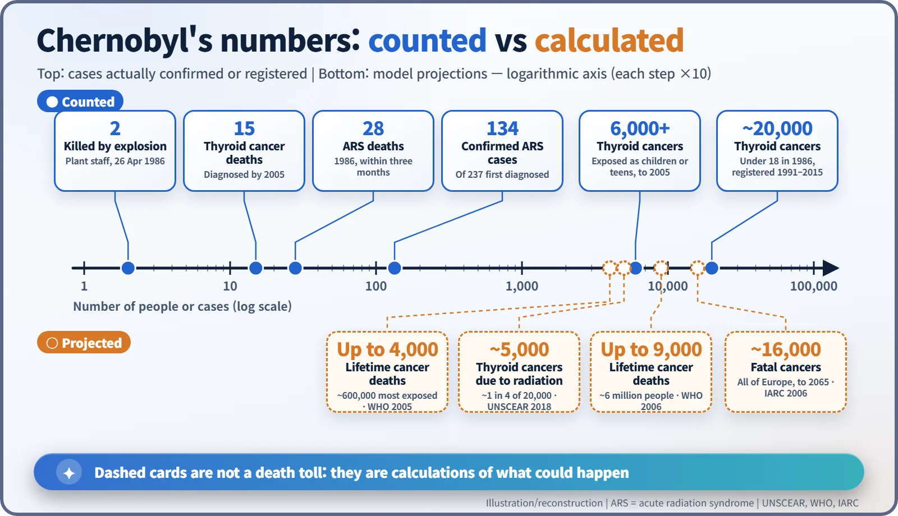

Nuclear History · 257
One Press Release, Two "4,000s" — Chernobyl's Health Effects According to UNSCEAR and WHO
Two killed by the explosion, 28 deaths from acute radiation syndrome, a clear rise in childhood thyroid cancer, and a projection of up to 4,000 eventual deaths: which numbers were counted and which were calculated.
The health toll of the 1986 Chernobyl accident has been quoted as anything from a few dozen to hundreds of thousands of deaths. The international assessments by UNSCEAR, WHO and the Chernobyl Forum separate what was counted (2 people killed by the explosion, 28 deaths from acute radiation syndrome among 134 confirmed cases, and a clear rise in childhood thyroid cancer) from what was calculated (up to 4,000 eventual cancer deaths among the most exposed, a projection based on the linear no-threshold model). Keeping the two apart is the key to reading the numbers.
One press release, two "4,000s"
On 5 September 2005 the World Health Organization (WHO), the International Atomic Energy Agency (IAEA) and the UN Development Programme (UNDP) issued a joint press release under the headline "Chernobyl: the true scale of the accident". The short text contains the number 4,000 twice. Once it refers to "about 4000 cases of thyroid cancer". The second time it says that "up to 4000 people could eventually die of radiation exposure". [1]
The first 4,000 is a count of patients who had actually been diagnosed. The second is a calculation about things that had not happened. Blend them into "Chernobyl killed 4,000 people" and the real picture blurs. This article separates the numbers that were counted from the numbers that were calculated.
Numbers that wouldn't sit still
After the explosion at Unit 4 of the Chernobyl plant on 26 April 1986, estimates of the death toll ranged from dozens to hundreds of thousands. In February 2003 eight UN bodies, among them the IAEA and WHO, joined the governments of Belarus, Russia and Ukraine to form the Chernobyl Forum, which set out to give the public an agreed assessment. The scientific evaluations were carried by the UN Scientific Committee on the Effects of Atomic Radiation (UNSCEAR) in its reports of 2000, 2008 and 2018.

What was counted
The firmest numbers come from the site itself. Two plant workers were killed by the explosion. Acute radiation syndrome (ARS) is the illness that follows a very large dose received in a short time, when the bone marrow and other organs are overwhelmed. It was first diagnosed in 237 people and later confirmed in 134. Their doses ranged from 0.8 to 16 gray, far beyond anything met in everyday life. Of those 134, 28 died within the first three months. [2] [4]
Nineteen more of the survivors died between 1987 and 2004, but the international bodies say these deaths cannot necessarily be attributed to radiation. That is why the 2005 release could state that "fewer than 50 deaths had been directly attributed to radiation from the disaster".
A trail that ran through the milk
The other clearly established harm was thyroid cancer in children, and the culprit was iodine-131. Its half-life is only about eight days, but once it settled on pasture, cows ate the grass and within days it reached the breakfast table in milk. The thyroid gathers iodine, so children, who drink a lot of milk and have small thyroid glands, received the highest doses.
The rise appeared four to five years after the accident. Among children aged 14 or younger, incidence in 1991–94 was five to ten times that of 1986–90. UNSCEAR found that by 2005 more than 6,000 cases had been diagnosed in people who were children or adolescents at the time of the accident, and that 15 of them had died. The figure is higher than the press release's "about 4,000" simply because it was counted later. [2] [5]

Twenty thousand cases, one in four
UNSCEAR's 2018 white paper widened the frame. About 20,000 thyroid cancers were registered between 1991 and 2015 in people who had been under 18 in 1986, across Belarus, Ukraine and the four most contaminated regions of Russia. The committee estimated that about one in four was due to radiation, with an uncertainty range extending "at least from 0.07 to 0.5". The rest reflect wider screening and cases that would have arisen anyway as the population aged. [3]
The Forum reported a survival rate of almost 99 per cent, judging from experience in Belarus. That does not shrink what the children who went through surgery and treatment had to bear.
How the calculated numbers were made
Where does "up to 4,000" come from? The starting point is dose. According to WHO, the average effective dose was:
| Group | People | Average effective dose |
|---|---|---|
| Recovery workers | about 530,000 | about 120 mSv |
| Evacuees | about 115,000 | about 30 mSv |
| Residents of contaminated areas | — | about 9 mSv over two decades |
| For comparison: natural background | world average | about 3.0 mSv per year (UNSCEAR 2024) |
Apart from the workers, these are not high doses. To turn doses into future deaths, scientists apply the linear no-threshold (LNT) assumption: even a small dose carries a proportionally small risk. Applied to the roughly 600,000 most exposed people (200,000 emergency workers of 1986–87, 116,000 evacuees and 270,000 residents of the most contaminated areas), it gives "up to 4,000" eventual deaths. In 2006 WHO widened the group to about six million people, including residents of less contaminated areas, and arrived at up to about 9,000. The International Agency for Research on Cancer (IARC) projected about 16,000 fatal cancers across the whole of Europe by 2065. [1] [2]

These projected deaths are mixed in with a far larger number of cancer deaths that would occur in the same populations anyway, which makes them very hard to pick out in the statistics. Some groups have published much larger figures, but their methods differ, and those figures sit outside the consensus of the international bodies.
A shadow larger than the dose
What the Forum called "the largest public health problem created by the accident" was, perhaps surprisingly, mental health. Exposed populations reported anxiety symptoms about twice as often as comparison groups, and inaccurate information and the label of "victim" fed a sense of helplessness. The Forum therefore recommended speaking of "survivors" instead. [1] [2]
Some feared effects did not appear. No decrease in fertility and no increase in birth defects was observed, and a 2021 study in Science found no increase in new genetic mutations among children of exposed parents. On the other hand, signs of more leukaemia and cataracts have been reported among the recovery workers who received the highest doses, and they are still being followed. [4]
Chernobyl's health toll was neither "nothing much" nor "hundreds of thousands". It comes into focus only when the confirmed deaths, the calculated risks and the harm that numbers capture poorly are each put in their proper place.